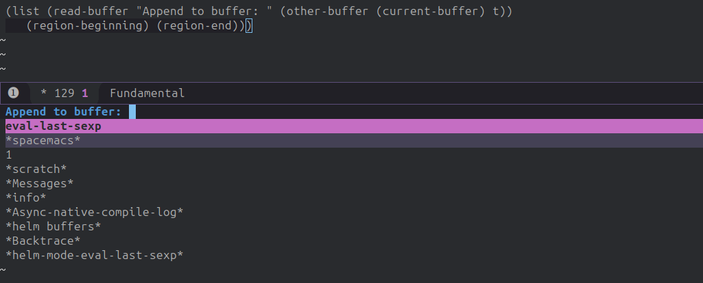

The Definition of append-to-buffer¶
(defun append-to-buffer (buffer start end)
"Append to specified BUFFER the text of the region.
The text is inserted into that buffer before its point.
BUFFER can be a buffer or the name of a buffer; this
function will create BUFFER if it doesn't already exist.
When calling from a program, give three arguments:
BUFFER (or buffer name), START and END.
START and END specify the portion of the current buffer to be copied."
(interactive
(list (read-buffer "Append to buffer: " (other-buffer (current-buffer) t))
(region-beginning) (region-end)))
(let* ((oldbuf (current-buffer))
(append-to (get-buffer-create buffer))
(windows (get-buffer-window-list append-to t t))
point)
(save-excursion
(with-current-buffer append-to
(setq point (point))
(barf-if-buffer-read-only)
(insert-buffer-substring oldbuf start end)
(dolist (window windows)
(when (= (window-point window) point)
(set-window-point window (point))))))))
Interactive Expression¶
The expression reads as follows:
(interactive
(list (read-buffer
"Append to buffer: "
(other-buffer (current-buffer) t))
(region-beginning)
(region-end)))
The read-buffer function requires a prompt as its first argument, ‘”Append to buffer: “’. Its second argument tells the command what value to provide if you don’t specify anything.
The expression looks like this:
The Body of append-to-buffer¶
The body of the append-to-buffer function begins with let.
The expression reads as follows:
(let* ((oldbuf (current-buffer))
(append-to (get-buffer-create buffer))
(windows (get-buffer-window-list append-to t t))
point)
(oldbuf (current-buffer))
oldbuf, is bound to the value returned by the (current-buffer) expression. The variable, oldbuf, is used to keep track of the buffer in which you are working and from which you will copy
(append-to (get-buffer-create buffer)
we see that append-to is bound to the value returned by the (get-buffer-create buffer)